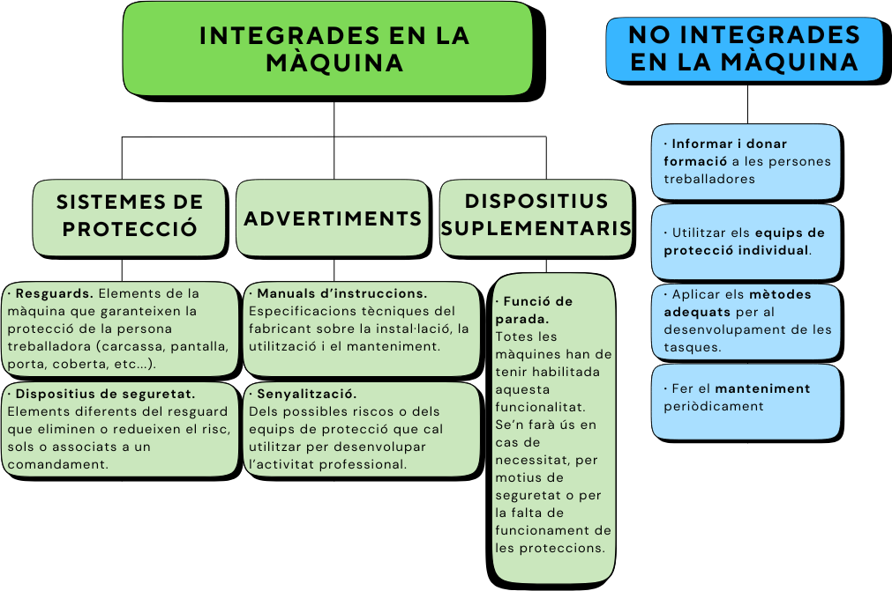
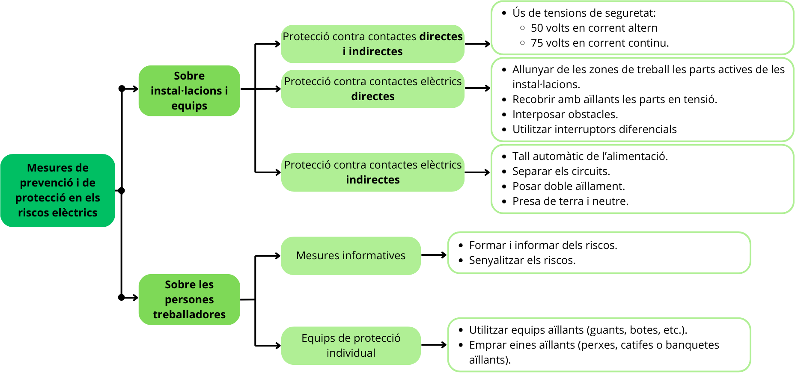

1. Els riscos derivats de les condicions de seguretat
Els riscos derivats de les condicions de seguretat són els causats per elements que, quan estan presents, poden provocar accidents de treball.
Els riscos deguts a les condicions de seguretat poden estar originats pels següents elements:
| Llocs de treball | Equips de treball | Instal·lacions elèctriques | Incendis |
 |
 |
 |
 |
1.1. Els llocs de treball
Els llocs de treball han de reunir una sèrie de condicions perquè no es produeixin accidents i l'activitat laboral s'hi desenvolupi de manera segura i saludable.
Els llocs de treball són les àrees del centre de treball, edificades o no, en què la persona treballadora ha de romandre o a què ha d'accedir per a qualsevol tasca que tingui a veuire amb la seva feina.
Els riscos de treball poden ser font dels riscos laborals següents:
| Riscos en els llocs de treball | |
|---|---|
|
|
Els llocs de treball han de complir unes condicions mínimes, amb la finalitat que no es generin riscos per a la seguretat i la salut de les persones treballadores:
| Espais de treball i zones perilloses |
|
|---|---|
| Sòls, obertures, desnivells i baranes |
|
| Escales i rampes |
|
| Vies de circulació |
|
| Ordre, neteja i manteniment |
|
| Il·luminació | La il·luminació ha d'adaptar-se a les característiques i les exigències de les tasques que s'hi desenvolupin. En els llocs de treball serà, com a mínim, de 100 lux per a tasques amb exigències visuals baixes, 200 lux per a mitjanes, 500 lux per a altes i 1000 per a molt altes. En les zones comunes d'ús ocasional hi haurà un mínim de 50 lux i 100 lux en les zones d'ús habitual. En les vies de circulació hi haurà un mínim de 25 lux per a d'ús ocasional i 50 lux per a les d'ús habitual. |
1.2. Els equips de treball
En tots els sectors productius s'utilitzen equips de treball (màquines i eines) que poden ser un factor de risc d'accidents laborals.
Segons el Reial decret 1215/1997, un equip de treball és qualsevol màquina, aparell, instrument o instal·lació utilitzat en el treball.
A. Els riscos derivats de l'ús de les màquines
Les màquines poden generar una sèrie de riscos per a la seguretat i la salut de les persones treballadores. Alguns dels més freqüents són:
| Mecànics | ||
|---|---|---|
| Atrapaments | Talls i cops | Projecció de partícules |
 |
 |
 |
| Atrapaments per parts mòbils de les màquines. Danys: lesions per aixafaments i amputacions. |
Talls, per la presència d'elements de tall, com fulles o discos de tall. Cops, per la presència de parts mòbils o no mòbils que sobresurten Danys: lesions, ferides i amputacions. |
Projecció de partícules per la ruptura de la màquina o projecció de materials utilitzats. Danys: lesions en la pell o en els ulls. |
| Elèctrics | Sorolls | Tèrmics |
 |
 |
 |
| Contacte directe o indirecte amb elements actius o posats accidentalment en tensió. Danys: electrització, tetanització, cremades, etc. |
Exposició a nivells alts de soroll. Danys: pèrdua d'audició, estrès, fatiga, etc. |
Per contacte amb materials o peces exposats a altes temperatures. Per exposició a flames d'incendis i d'explosions Danys: cremades. |
| Vibracions | Radiacions | Ergonòmics |
 |
 |
 |
| Exposició a vibracions transmeses per les màquines. Danys: trastorns musculoesquelètics. |
Exposició a radiacions emeses per les màquines. Danys: danys en la vista, en els teixits, càncer, cataractes, etc. |
Realització de postures forçades i moviments repetitius. Danys: trastorns musculoesquelètics. |
La principal mesura de prevenció consisteix a adquirir màquines segures, però per a protegir-se contra els riscos convé adoptar mesures preventives:
B. Els riscos derivats de l'ús de les eines
Els treballs de manteniment i reparació requereixen de l'ús d'eines, que poden ser manuals (accionades per la força humana: tornavís, martell, alicates, etc.) o portàtils (amb accionament elèctric, pneumàtic o hidràulic). Aquest ús comporta certs riscos, per la qual cosa cal adoptar certes mesures preventives:
| Riscos de l'ús d'eines | Factors de risc | Mesures preventives |
|---|---|---|
|
|
|
C. Els riscos derivats dels equips amb noves tecnologies
L'ús de les noves tecnologies va canviant la manera de treballar i els entorns de treball. La seva aplicació suposa l'ús de nous equips de treball
per a reduir els accidents laborals i millorar les condicions de seguretat i salut de les persones, reduint els trastorns musculoesquelètics, pel fet d'eliminar
la manipulació de càrregues, les tasques repetitives, les postures estàtiques i les postures forçaces.
Tot i que aquests equips eliminen riscos, sí que poden estar en l'origen d'altres riscos, que tenen a veure amb els processos que desenvolupen. Aquests riscos
poden ser psicosocials, derivats de la càrrega mental que implica utilitzar-los, de ser necessària més atenció i que la persona treballadora tingui menys autonomia:
| Característiques | Riscos de seguretat | |
|---|---|---|
| Robots | Són mecanismes programables en dos eixos o més que tenen cert grau d'autonomia, es mouen dins del seu entorn operatiu i executen les activitats previstes. |
|
| Drons | Són aeronaus no tripulades dirigides a distància. |
|
| Exoesquelets | Dispositius externs portàtils que es col·loquen al damunt del cos de l'usuari amb la finalitat d'augmentar les seves capacitats i reduir la càrrega física. |
|
1.3. El risc elèctric
Els accidents provocats per l'ús d'electricitat en l'àmbit laboral no suposen un percentatge elevat, però les seves conseqüències poden ser molt greus, ja que poden provocar fins i tot la mort.
Segons el Reial decret 614/2001, el risc elèctric és originat pel corrent elèctric.
Aquesta definició inclou els riscos de:
a) Xoc elèctric per contacte directe amb elements en tensió (cable sense recobriment o peces conductores del corrent elèctric),
o quan la persona toca masses (generalment, carcasses o parts metàl·liques d'un equip o d'una instal·lació) o s'han posat en tensió com a resultat
d'una fallada d'aïllament. Aquests són els riscos més freqüents.
b) Cremades per xoc elèctric o per arc elèctric.
c) Caigudes o cops com a conseqüència de xoc o arc elèctric
d) Incendis o explosions originats per l'electricitat, per exemple, com a conseqüència de sobrecàrregues o curtcircuits.
Els principals efectes produïts pel corrent elèctric en el cos humà són els que s'indiquen a continuació:
Els factors que influeixen en els efectes del pas de l'electricitat pel cos són la intensitat del corrent (a més intensitat, lesions més greus), la durada
del contacte elèctric (a més durada, danys més grans), la resistència que el cos humà oposa al corrent elèctric, el recorregut a través de l'organisme
(els efectes són molt més greus si en el trajecte del corrent es troben òrgans vitals, com els pulmons, el cor o el cervell) i la freqüència (corrent continu o altern).
Una activitat amb risc elèctric i en instal·lacions elèctriques ha de fer-se amb un procediment determinat i per persones autoritzades o qualificades. Aquests treballs es desenvoluparan sense
tensió sempre que sigui possible. La supressió de la tensió ha de fer-se seguint les anomenades cinc regles d'or:
Els riscos derivats de l'ús d'instal·lacions elèctriques poden evitar-se si s'apliquen certes mesures de prevenció i de protecció sobre les instal·lacions, els equips i les persones treballadores:
